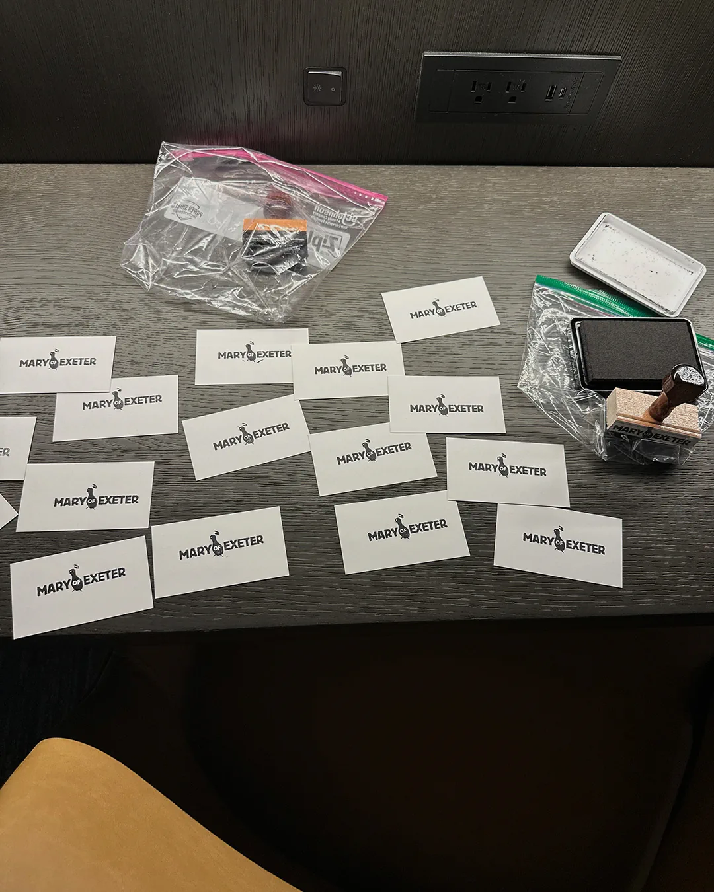

Mary of Exeter
GRAPHIC HAVOC designed the logo and animated ident for MARY OF EXETER, a New York City-based film production company whose credits include co-producing Atropia, directed by Hailey Gates and starring Alia Shawkat, Callum Turner, and Chloë Sevigny. The film premiered at the 2025 Sundance Film Festival, where it received the U.S. Grand Jury Prize: Dramatic.
The company takes its name, somewhat in jest, from Mary of Exeter, a celebrated carrier pigeon of the National Pigeon Service that flew military missions across the English Channel during World War II.
Despite being wounded on three occasions and surviving the bombing of her loft, Mary continued flying and was awarded the Dickin Medal in 1945 for endurance on war service.
That history became the basis of the identity. The pigeon is adorned with a laurel wreath, a deliberately direct symbol of heroism and triumph that gives the mark a ceremonial quality while retaining the humor behind the company’s name.
